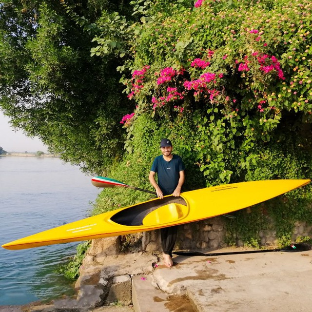
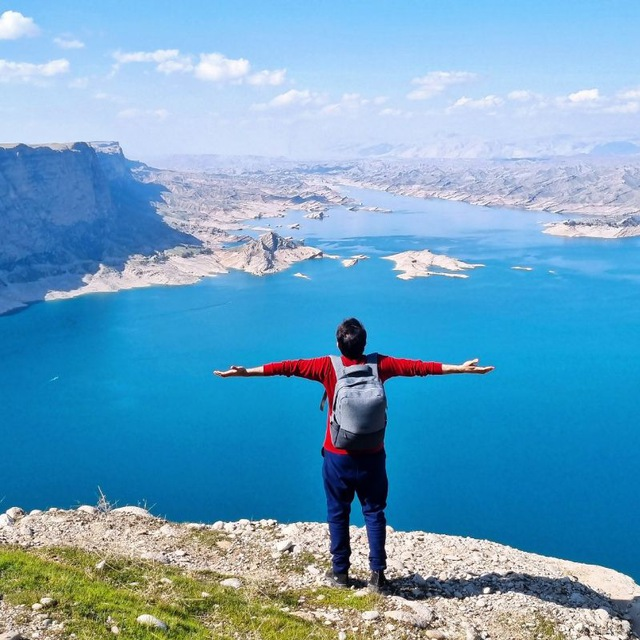
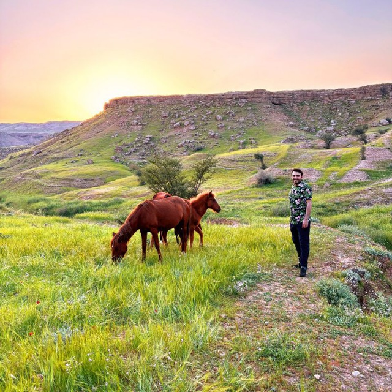
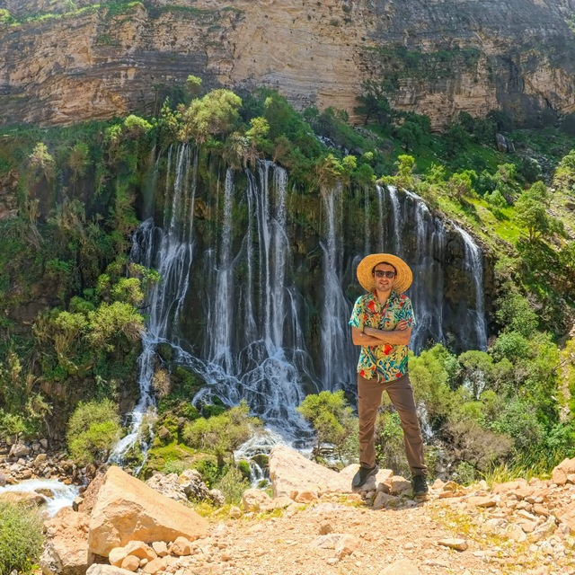

2023 – Present
GPA19.33/20 (4.0/4.0)
Thesis Investigating the Performance of Multimodal LLMs for Medical Image Analysis
I am an M.Sc. student in Computer Engineering and a researcher at the Natural Language Processing Laboratory, University of Tehran. My research bridges the gap between text and vision, focusing heavily on Vision-Language Models (VLMs) and multimodal learning. I am particularly passionate about advancing AI in multilingual settings and developing robust, real-world systems for clinical and biomedical applications.
Canoeing · Mountaineering · Biking · Nature Photography




Email: Alikhorramfar@gmail.com